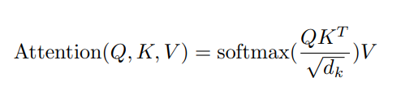

Attention 公式

公式中的(Q)uerys, (K)eys, (V)alues可以視為一種representations,他們各自對應一組權重，模型的目的就是去學習權重
而√dk則是scaling factor, Q或K的維度
所以更詳細的表示:
1 | Q = Q * Q_Weight |
在Self-Attention中 Q=K=V, 僅對應的權重不同
Self-Attention Score
輸入
inputs 可以視為一句話經過encode的結果，每一個input則為其單詞
1 | input_1 = np.array([1, 0, 1, 0], dtype='float32') |
權重
1 | wk = np.array([[0, 0, 1], |
Calculate QKV representations
1 | # Q=K=V=inputs |
Calculate attention scores
1 | softmax(np.divide(query_representations.dot(key_representations.transpose()),query_representations_dim),axis=1)\ |
Jupyter Notebook Sample Code
p208p2002/Self-Attention-cacultate-with-numpy